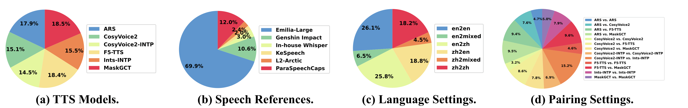

SpeechJudge: Towards Human-Level Judgment for Speech Naturalness
Abstract
Aligning large generative models with human feedback is a critical challenge. In speech synthesis, this is particularly pronounced due to the lack of a large-scale human preference dataset, which hinders the development of models that truly align with human perception. To address this, we introduce SpeechJudge, a comprehensive suite comprising a dataset, a benchmark, and a reward model centered on naturalness—one of the most fundamental subjective metrics for speech synthesis. First, we present SpeechJudge-Data, a large-scale human feedback corpus of 99K speech pairs. The dataset is constructed using a diverse set of advanced zero-shot text-to-speech (TTS) models across diverse speech styles and multiple languages, with human annotations for both intelligibility and naturalness preference. From this, we establish SpeechJudge-Eval, a challenging benchmark for speech naturalness judgment. Our evaluation reveals that existing metrics and AudioLLMs struggle with this task; the best-performing model, Gemini-2.5-Flash, achieves less than 70% agreement with human judgment, highlighting a significant gap for improvement. To bridge this gap, we develop SpeechJudge-GRM, a generative reward model (GRM) based on Qwen2.5-Omni-7B. It is trained on SpeechJudge-Data via a two-stage post-training process: Supervised Fine-Tuning (SFT) with Chain-of-Thought rationales followed by Reinforcement Learning (RL) with GRPO on challenging cases. On the SpeechJudge-Eval benchmark, the proposed SpeechJudge-GRM demonstrates superior performance, achieving 77.2% accuracy (and 79.4% after inference-time scaling @10) compared to a classic Bradley-Terry reward model (72.7%). Furthermore, SpeechJudge-GRM can be also employed as a reward function during the post-training of speech generation models to facilitate their alignment with human preferences.
SpeechJudge-Data
We recruit human annotators to provide feedback on synthesized speeches, with a focus on assessing two fundamental speech aspects: intelligibility and naturalness. The human annotators are instructed to perform two tasks based on a speech pair: (a) pointwise annotation of text accuracy to assess intelligibility, and (b) pairwise preference annotation to judge relative speech naturalness. This extensive effort, involving 69 labelers over two months, results in 99K annotated pairs, with each pair receiving an average of 2.49 annotations from different labelers. The system interface for human annotation is shown below:
For data synthesis, we employ a diverse set of advanced open-source zero-shot TTS models with varying architectures (see the subfigure (a)) to generate paired speech samples (see the subfigure (d)). We prepare speech references in both regular and expressive styles sourced from several datasets (see the subfigure (b)). In addition, we construct multilingual target texts encompassing both monolingual and cross-lingual synthesis scenarios to ensure data diversity (see the subfigure (c)).
SpeechJudge-Eval
We design a dedicated evaluation benchmark for the task of speech naturalness judgment. The task is structured as follows: given a target text and two corresponding speech samples, a model needs to judge which one is more natural. To construct the evaluation set, we select a subset from the SpeechJudge-Data where human annotators demonstrated high inter-annotator agreement, ensuring a high-quality ground truth.

We benchmark the naturalness judgment capability of various models based on SpeechJudge-Eval. A key observation is that speech naturalness judgment is a highly challenging task. The best-performing model, Gemini-2.5-Flash, still only achieves less than 70% agreement with human preferences.
SpeechJudge-GRM
Based on the proposed SpeechJudge-Data, we further explore how to train a Generative Reward Model (GRM) capable of accurately capturing human preferences. To this end, we introduce SpeechJudge-GRM, a model built upon Qwen2.5-Omni-7B (Thinker), and trained through a two-stage "Supervised Fine-Tuning (SFT) + Reinforcement Learning (RL)" post-training process specially designed for speech naturalness judgment task.

The results of SpeechJudge-GRM on the SpeechJudge-Eval benchmark are shown below. We develop SpeechJudge-BTRM as a baseline, which utilizes the classic Bradley-Terry Reward Model (BTRM) paradigm by adding a linear layer on Qwen2.5-Omni-7B (Thinker) to produce a single scalar reward prediction. We can observe that the SpeechJudge-GRM reaches 77.2% of agreement with human preferences, outperforming the classic BTRM (72.7%). Furthermore, when using the inference-time scaling (voting@10), the performance of SpeechJudge-GRM further improves to 79.4%.
In addition to exhibiting superior performance in naturalness judgment, SpeechJudge-GRM also demonstrates a certain degree of explainability by revealing its chain-of-thought reasoning process. Below are several cases illustrating the reasoning behavior of SpeechJudge-GRM, randomly selected from the SpeechJudge-Eval benchmark:
We are comparing the naturalness of two text-to-speech models' outputs. The models need to speak the target text accurately and naturally.
Target text: {{ currentGrmEntry.target_text }}
Output A:Analyze the two output above, and score them with number from 1 to 10.
Note:
- Please evaluate the naturalness of both audio outputs based on the following criteria: Prosody and Intonation, Pacing and Rhythm, Articulation and Clarity, and Overall Naturalness.
- After conducting a detailed analysis of each criterion, using the following output template to highlight your conclusion: Output A: X, Output B: X.
{{ currentGrmEntry.naturalness_result }} is better.
Applications
High-Quality Sample Selection based on SpeechJudge-GRM
We investigate the effect of SpeechJudge-based reward models for high-quality sample selection. We use the
hard cases from SeedTTS-Eval and the
code-switching cases from Amphion-TTS-Eval as target texts. For
each text, we instruct the Qwen2.5-Omni-7B (Talker) to generate 100 speeches. We then ask
human subjects to compare the best-of-100 output—as selected by either SpeechJudge-BTRM or
SpeechJudge-GRM—against a randomly sampled output. Here are some examples:
| Target Text | Random | SpeechJudge-BTRM | SpeechJudge-GRM |
|---|---|---|---|
| {{ item.target_text }} |
|
|
|
Post-Training of Zero-Shot TTS based on SpeechJudge-GRM
We investigate the effect of using SpeechJudge-GRM as a reward function for post-training of TTS model. Specifically, we develop a new zero-shot TTS model, Qwen2.5-0.5B-TTS, to serve as the base model, which was not involved in the construction of the SpeechJudge-Data. The compared methods are as follows:
- Qwen2.5-0.5B-TTS (Base): The base model without any post-training. Based on it, we use the different methods to perform post-training:
- w/ SpeechJudge-Data: We use the SpeechJudge-Data to perform the offline DPO alignment.
- w/ SpeechJudge-GRM (offline): We use SpeechJudge-GRM as an offline preference data annotator. We take all speech pairs from the INTP dataset and reannotate their preference labels using SpeechJudge-GRM, then perform offline DPO alignment on the resulting data.
- w/ SpeechJudge-GRM (online): We use SpeechJudge-GRM as a reward function for the online DPO algorithm. The training data consists of only the prompts from INTP (i.e., the target texts and speech references for zero-shot TTS).
| Reference | Target Text | Base | w/ SpeechJudge-Data | w/ SpeechJudge-GRM (offline) | w/ SpeechJudge-GRM (online) |
|---|---|---|---|---|---|
|
|
{{ item.target_text }} |
|
|
|
|